측량및지형공간정보산업기사 (2016-05-08 기출문제)
1과목: 응용측량
1. 지하시설물측량에 관한 설명으로 옳지 않은 것은?
- 지하시설물측량이란 시설물을 조사, 탐사하고 위치를 측량하여 도면 및 수치로 표현하고 데이터베이스로 구축하는 것을 의미한다.
- 지하시설물에 대한 탐사간격은 20m 이하로 하는 것을 원칙으로 한다.
- 지하시설물의 위치, 깊이, 서로 떨어진 거리 등을 측량한다.
- 지표면상에 노출된 지하시설물은 측량하지 않는다.
(정답률: 86%)

2. 그림의 체적(V)을 구하는 공식으로 옳은 것은?
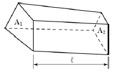
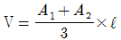
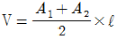
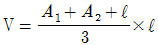
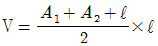
(정답률: 83%)
3. 노선측량에서 공사측량과 거리가 먼 것은?
- 기준점 확인
- 중심선 검측
- 인조점 확인 및 복원
- 용지도 작성
(정답률: 67%)
4. 원곡선으로 곡선을 설치할 때 교각 50°, 반지름 100m, 곡선시점의 위치 No.10+12.5m일 때 도로기점으로부터 곡선종점까지의 거리는? (단, 중심말뚝 간의 거리는 20m이다.)
- 299.77m
- 399.77m
- 421.91m
- 521.91m
(정답률: 60%)
5. 하천측량에 관한 내용 중 옳은 것은?
- 하천의 제방, 호안 등은 상류를 기점으로 하여 하류 방향으로 측점번호를 정한다.
- 횡단면도는 하류에서 상류를 바라본 것으로 작도하여 도면 좌측이 좌안, 우측이 우안이 된다.
- 수위표의 0점 위치는 최저 수위보다 낮게 하여 정한다.
- 종단면도는 상류측이 도면의 좌측에 위치하고, 하류측이 우측에 위치하도록 작성한다.
(정답률: 59%)
6. 그림과 같은 하천단면에 평균유속 2.0m/s로 물이 흐를 때 유량(m3/s)은?
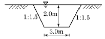
- 10m3/s
- 20m3/s
- 24m3/s
- 40m3/s
(정답률: 60%)
7. 그림과 같이 구곡선의 교점(DO)을 접선방향으로 20m 움직여서 신곡선의 교점(DN)으로 이동하였다. 시점(B.C)의 위치를 이동하지 않고 신곡선을 설치할 경우, 신곡선의 곡선반지름은? (단, 구곡선의 곡선반지름(RO)=150m, 구곡선의 교각(I)=100°)
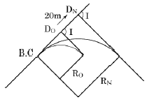
- 133.2m
- 146.5m
- 153.5m
- 166.8m
(정답률: 48%)
8. 트래버스측량을 통한 면적 계산에서 배횡거에 대한 설명으로 옳은 것은?
- 하나 앞 측선의 배횡거에 그 변의 위거를 더한 값이다.
- 하나 앞 측선의 배횡거에 그 변의 경거를 더한 값이다.
- 하나 앞 측선의 배횡거에 그 변과 하나 앞 측선의 경거를 더한 값이다.
- 하나 앞 측선의 배횡거에 그 변의 위거와 경거를 더한 값이다.
(정답률: 52%)
9. 경사가 되어 있는 터널 내의 트래버스 측량에 있어서 정밀한 측각을 위해 가장 적절한 방법은?
- 방위각법
- 배각법
- 편각법
- 단각법
(정답률: 64%)
10. 터널작업에서 터널 외 기준점 측량에 대한 설명으로 옳지 않은 것은?
- 터널 입구 부근에 인조점(引照點)을 설치한다.
- 측량의 정확도를 높이기 위해 가능한 후시를 짧게 잡는다.
- 고저측량용 기준점은 터널 입구 부근과 떨어진 곳에 2개소 이상 설치하는 것이 좋다.
- 기준점을 서로 관련시키기 위해 기준점이 시통되는 곳에 보조삼각점을 설치한다.
(정답률: 67%)
11. 터널측량에서 터널 내 고저측량에 대한 설명으로 옳지 않은 것은?
- 터널의 굴착이 진행됨에 따라 터널 입구 부근에 이미 설치된 고저기준점(B.M)으로부터 터널 내의 B.M에 연결하여 터널 내의 고저를 관측한다.
- 터널 내의 B.M은 터널 내 작업에 의하여 파손되지 않는 곳에 설치가 쉽고 측량이 편리한 장소를 선택한다.
- 터널 내의 고저측량에는 터널 외와 달리 레벨을 사용하지 않는다.
- 터널 내의 표적은 작업에 지장이 없도록 알맞은 길이를 사용하고 조명을 할 수 있도록 해야 한다.
(정답률: 85%)
12. 그림과 같은 운동장의 둘레 거리는?
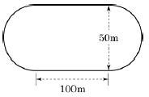
- 514m
- 475m
- 357m
- 227m
(정답률: 56%)
13. 반지름이 1200m인 원곡선에 의한 종단곡선을 설치할 때 접선시점으로부터 횡거 20m지점의 종거는?
- 0.17m
- 1.45m
- 2.56m
- 3.14m
(정답률: 53%)
14. 토공량과 같은 체적 산정을 위한 기본공식이 아닌 것은?
- 각주공식
- 양단면 평균법
- 중앙단면법
- 심프슨의 제2법칙
(정답률: 77%)
15. 토량과 같은 체적계산 방법이 아닌 것은?
- 삼사법
- 등고선법
- 점고법
- 양단면 평균법
(정답률: 59%)
16. 곡선설치에서 반지름이 500m일 때 중심말뚝간격 20m에 대한 편각은?
- 0° 01′ 09″
- 0° 02′ 18″
- 1° 08′ 45″
- 2° 17′ 31″
(정답률: 64%)
17. 다음 중 교량의 경관계획에서 결정할 사항이 아닌 것은?
- 교량의 형식 및 규모
- 교량의 형태 및 색채
- 교량과 수면의 조화
- 교량의 성능 관리
(정답률: 79%)
18. 수로도서지 변경을 위한 수로조사 대상인 것은?
- 항로준설공사
- 터널공사
- 임도건설공사
- 저수지 둑 보강공사
(정답률: 59%)
19. 수심 h인 하천의 유속 측정을 한 결과가 표와 같다. 1점법, 2점법, 3점법으로 구한 평균 유속의 크기를 각각 V1, V2, V3라 할 때 이들을 비교한 것으로 옳은 것은?
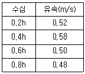
- V1 = V2 = V3
- V1 ＞ V2 ＞ V3
- V3 ＞ V2 ＞ V1
- V2 = V1 ＞ V3
(정답률: 66%)
20. 노선측량의 곡선에 대한 설명으로 옳지 않은 것은?
- 클로소이드 곡선은 완화곡선의 일종이다.
- 철도의 종단곡선은 주로 원곡선이 사용된다.
- 클로소이드 곡선은 고속도로에 적합하다.
- 클로소이드 곡선은 곡률이 곡선의 길이에 반비례한다.
(정답률: 64%)
2과목: 사진측량 및 원격탐사
21. 수치영상의 정합기법 중 하나인 영역기준정합의 특징이 아닌 것은?
- 불연속 표면에 대한 처리가 어렵다.
- 계산량이 많아서 시간이 많이 소요된다.
- 선형 경계를 따라서 중복된 정합점들이 발견될 수 있다.
- 주변 픽셀들의 밝기값 차이가 뚜렷한 경우 영상정합이 어렵다.
(정답률: 58%)
22. 항공사진측량 촬영용 항공기에 요구되는 조건으로 옳지 않은 것은?
- 안정성이 좋을 것
- 상승 속도가 클 것
- 이착륙 거리가 길 것
- 적재량이 많고 공간이 넓을 것
(정답률: 78%)
23. 다음과 같은 종류의 항공사진 중 벼농사의 작황을 조사하기 위하여 가장 적합한 사진은?
- 팬크로매틱사진
- 적외선사진
- 여색입체사진
- 레이더사진
(정답률: 63%)
24. 어느 지역의 영상으로부터 “논”의 훈련지역(training field)을 선택하여 해당 영상소를 “P”로 표기하였다. 이때 산출되는 통계값과 사변형 분류법(parallelepiped classification)을 이용하여 “논”을 분류한 결과로 적당한 것은?
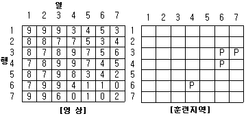
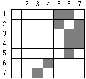
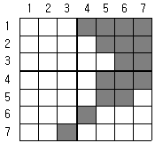
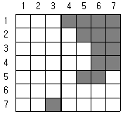
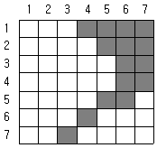
(정답률: 56%)
25. 우리나라 다목적실용위성5호(KOMPSAT-5)에 탑재된 센서인 SAR의 특징으로 옳은 것은?
- 구름 낀 날씨뿐만 아니라 야간에도 촬영이 가능하다.
- 주로 광학대역에서 반사된 태양광을 측정하는 센서이다.
- 주로 기상과 해수 온도 측정을 위한 역할을 수행한다.
- 센서의 에너지 소모가 수동형 센서보다 적다.
(정답률: 72%)
26. 주점의 위치와 사진의 초점거리를 정확하게 맞추는 작업은?
- 상호표정
- 절대(대지)표정
- 내부표정
- 접합표정
(정답률: 74%)
27. 사진측량의 특징에 대한 설명으로 옳지 않은 것은?
- 움직이는 물체를 측정하여 순간 위치를 결정할 수 있다.
- 좁은 지역에 대한 측량에 경제적이다.
- 정확도를 균일하게 얻을 수 있다.
- 접근이 어려운 대상물의 측정이 가능하다.
(정답률: 78%)
28. 2쌍의 영상을 입체시하는 방법 중 서로 직교하는 두 개의 편광 광선이 한 개의 편광면을 통과할 때 그 편광면의 진동방향과 일치하는 광선만 통과하고, 직교하는 광선을 통과 못하는 성질을 이용하는 입체시의 방법은?
- 여색 입체 방법
- 편광 입체 방법
- 입체경에 의한 방법
- 순동입체 방법
(정답률: 76%)
29. 평지를 촬영고도 1500m에서 촬영한 연직사진이 있다. 이 밀착사진 상에 있는 건물 상단과 하단, 두 점 간의 시차차를 관측한 결과, 1mm이었다면 이 건물의 높이는? (단, 사진기의 초점거리는 15cm, 사진면의 크기는 23×23cm, 종중복도 60%이다.)
- 10m
- 12.3m
- 15m
- 16.3m
(정답률: 54%)
30. 다음 중 항공사진의 판독요소와 거리가 먼 것은?
- 색조(tone)
- 형태(pattern)
- 시간(time)
- 질감(texture)
(정답률: 67%)
31. 고도 2500m에서 초점거리 150mm의 사진기로 촬영한 수직항공사진에서 길이 50m인 교량의 길이는?
- 2mm
- 3mm
- 4mm
- 5mm
(정답률: 61%)
32. 대공표지에 대한 설명으로 옳은 것은?
- 사진의 네 모서리 또는 네 변의 중앙에 있는 표식
- 평균해수면으로부터 높이를 정확히 구해 놓은 고정된 표지나 표식
- 항공사진에 표정용 기준점의 위치를 정확하게 표시하기 위하여 촬영 전에 지상에 설치한 표지
- 삼각점, 수준점 등의 기준점의 위치를 표시하기 위하여 돌로 설치된 측량표지
(정답률: 76%)
33. 종중복 60%, 횡중복 20%일 경우 촬영종기선 길이(B)와 촬영횡기선 길이(C)의 비(B：C)는?
- 1：2
- 2：1
- 4：7
- 7：4
(정답률: 65%)
34. 기복변위에 대한 설명으로 옳은 것은?
- 사진면에서 등각점을 중심으로 방사상의 변위
- 사진면에서 연직점을 중심으로 X방향의 변위
- 사진면에서 등각점을 중심으로 Y방향의 변위
- 사진면에서 연직점을 중심으로 방사상의 변위
(정답률: 53%)
35. 동서 20km, 남북 20km의 지역을 축척 1:20000의 항공사진으로 종중복도 60%, 횡중복도 30%로 촬영할 경우 필요한 사진매수는? (단, 사진의 크기는 23×23cm이고, 안전율은 30%이다.)
- 58매
- 68매
- 78매
- 88매
(정답률: 49%)
36. 사진측량으로 지형도를 제작할 때 필요하지 않은 공정은?
- 사진촬영
- 기준점측량
- 세부도화
- 수정모자이크
(정답률: 68%)
37. 항공사진에서 건물의 높이가 높을수록 크기가 증가하는 것이 아닌 것은?
- 기복변위
- 폐색지역
- 렌즈왜곡
- 시차차
(정답률: 58%)
38. 편위수정에 있어서 만족해야 할 3가지 조건으로 옳지 않은 것은?
- 샤임 프러그 조건
- 타이 포인트 조건
- 광학적 조건
- 기하학적 조건
(정답률: 73%)
39. 인공위성에 의한 원격탐사(Remote Sensing)의 특징에 대한 설명으로 옳지 않은 것은?
- 관측자료가 수치적으로 취득되므로 판독이 자동적이며 정량화가 가능하다.
- 관측 시각이 좁으므로 정사투영상에 가까워 탐사자료의 이용이 쉽다.
- 자료수집의 광역성 및 동시성, 주기성이 좋다.
- 회전주기가 일정하므로 언제든지 원하는 지점 및 시기에 관측하기 쉽다.
(정답률: 77%)
40. DEM의 해상도를 향상시키기 위해 사용되는 방법은?
- 모자이크
- 보간법
- 영상정합
- 좌표변환
(정답률: 65%)
3과목: GIS 및 GPS
41. 사이클 슬립(cycle slip)의 발생 원인이 아닌 것은?
- 장애물에 의해 위성신호의 수신이 방해를 받은 경우
- 전리층 상태의 불량으로 낮은 신호-잡음비가 발생하는 경우
- 단일주파수 수신기를 사용하는 경우
- 수신기에 급격한 이동이 있는 경우
(정답률: 62%)
42. 공간상에서 주어진 지점과 주변의 객체들이 얼마나 가까운지를 파악하는 데 활용되는 근접(근린) 분석에 대한 설명으로 옳지 않은 것은?
- 근접 분석 기능을 수행하기 위해서는 목표 지점의 설정, 목표 지점의 근접 지역, 근접 지역 내에서 수행되어야 할 작업, 총 3가지 조건이 명시되어야 한다.
- 근접 분석에서 거리는 통행에 소요되는 시간 또는 비용으로도 측정될 수 있다.
- 일반적으로 근접 분석은 관심대상 지점으로부터 연속거리를 측정하여 분석되므로, 벡터데이터를 기반으로 한다.
- 근접 분석은 분석 목표에 따라서 검색 기능과 확산 기능, 공간적 집적 기능 그리고 경사도 분석 등으로 구분된다.
(정답률: 50%)
43. 지리정보시스템(GIS) 데이터 구축에 있어서 항공사진측량에 의한 수치지형도의 제작 과정으로 옳은 것은?
- 항공사진촬영→정사영상제작→정위치편집→수치도화→지리조사→구조화편집→항공삼각측량
- 항공사진촬영→정사영상제작→구조화편집→수치도화→정위치편집→지리조사→항공삼각측량
- 항공사진촬영→정사영상제작→항공삼각측량→구조화편집→지리조사→수치도화→정위치편집
- 항공사진촬영→정사영상제작→항공삼각측량→수치도화→지리조사→정위치편집→구조화편집
(정답률: 47%)
44. 자원정보체계(RIS：resources information system)에 대한 설명으로 옳은 것은?
- 수치지형모형, 전산도형해석기법과 조경, 경관요소 및 계획대안을 고려한 다양한 모의관측을 통하여 최적 경관계획안을 수립하기 위한 정보체계
- 대기오염정보, 수질오염정보, 고형폐기물 처리정보, 유해폐기물 등의 위치 및 특성과 관련된 전산정보체계
- 농산자원, 삼림자원, 수자원, 지하자원 등의 위치, 크기, 양 및 특성과 관련된 정보체계
- 수계특성, 유출특성 추출 및 강우빈도와 강우량을 고려한 홍수방재체제 수립, 지진방재체제 수립, 민방공체제구축, 산불방재대책 등의 수립에 필요한 정보체계
(정답률: 74%)
45. 일련의 자료들을 기술하거나 이들 자료를 대표하기 위하여 사용되는 자료로서 데이터베이스, 레이어, 속성 공간 현상과 관련된 정보, 즉 자료에 대한 자료를 의미하는 것은?
- 헤더(header) 데이터
- 메타(meta) 데이터
- 참조(reference) 데이터
- 속성(attribute) 데이터
(정답률: 82%)
46. 지리정보자료의 구축에 있어서 표준화의 장점이라 볼 수 없는 것은?
- 경제적이고 효율적인 시스템 구축 가능
- 서로 다른 시스템이나 사용자 간의 자료 호환 가능
- 자료 구축을 위한 중복 투자 방지
- 불법복제로 인한 저작권 피해의 방지
(정답률: 65%)
47. 위성의 배치에 따른 정확도의 영향을 DOP라는 수치로 나타낸다. DOP의 종류에 대한 설명으로 옳지 않은 것은?
- GDOP：중력 정확도 저하율
- VDOP：수직 정확도 저하율
- HDOP：수평 정확도 저하율
- TDOP：시각 정확도 저하율
(정답률: 56%)
48. 일반 CAD 시스템과 비교할 때, GIS만의 특징에 대한 설명으로 옳은 것은?
- 위상구조를 이용하여 공간분석을 할 수 있다.
- 다양한 축척으로 자료를 활용할 수 있다.
- 수치지도 중 필요한 레이어만 추출할 수 있다.
- 점, 선, 면의 공간데이터를 다룬다.
(정답률: 73%)
49. 수치항공사진, 원격탐사, 격자형 수치표고모델 등과 같이 픽셀 단위로 정보를 저장할 수 있는 자료 구조는?
- vector
- raster
- attribute
- network
(정답률: 76%)
50. 수치지도 제작과정에서 항공사진을 기초로 제작된 지형도에 표기되는 지형과 지물 및 이와 관련된 제반 사항을 조사하는 과정은?
- 도화
- 지상 기준점 측량
- 현지 지리조사
- 지도제작편집
(정답률: 70%)
51. 수치표고모형(DEM) 또는 불규칙삼각망(TIN)을 이용하여 추출할 수 있는 정보가 아닌것은?
- 경사 방향
- 등고선
- 가시도 분석
- 지표 피복 활용
(정답률: 65%)
52. 데이터베이스 관리시스템의 형태(종류)와 거리가 먼 것은?
- 관계형
- 입체형
- 계층형
- 망형
(정답률: 53%)
53. 단위지역이 갖고 있는 속성값을 등급에 따라 분류하고 등급별로 음영이나 색채로 표시하는 주제도 표현방법으로 GIS에서 널리 사용되는 것은?
- 단계구분도
- 등치선도
- 음영기복도
- 도형표현도
(정답률: 44%)
54. GNSS 측량으로 측점의 타원체고(h) 15m를 관측하였다. 동일 지점의 지오이드고(N)가 5m일 때, (정)표고는?
- 10m
- 15m
- 20m
- 75m
(정답률: 73%)
55. 도로명(ROAD_NAME)이 봉주로(BONGJURO)인 도로를 STREET 테이블에서 찾고자 한다. 이를 위해 작성해야 될 SQL문으로 옳은 것은?
- SELECT * FROM STREET WHERE ROAD_NAME = BONGJURO
- SELECT STREET FROM ROAD_NAME WHERE BONGJURO
- SELECT BONGJURO FROM STREET WHERE ROAD_NAME
- SELECT * FROM STREET WHERE BONGJURO = ROAD_NAME
(정답률: 62%)
56. 일반적인 GIS의 구성요소 중 도형자료와 속성자료를 합친 모든 정보를 입력하여 보관하는 정보의 저장소로 GIS구축과정에서 많은 시간과 비용을 차지하는 것은?
- 하드웨어
- 소프트웨어
- 데이터베이스
- 인력
(정답률: 66%)
57. 기종이 서로 다른 GPS 수신기를 혼용하여 기준망 측량을 실시하였을 때, 획득한 GPS관측데이터의 기선해석을 용이하도록 만든 GPS 데이터 표준자료형식은?
- DXF
- RTCM
- NMEA
- RINEX
(정답률: 78%)
58. AB의 길이가 20km일 때 이 직선으로부터 1km의 버퍼링 분석을 실시하고자 할 때 생성되는 폴리곤의 면적(km2)은?
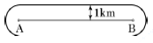
- 20
- 20+π
- 40
- 40+π
(정답률: 55%)
59. GPS측량에서 C/A 코드에 인위적으로 궤도오차 및 시계오차를 추가하여 민간사용의 정확도를 저하시켰던 정책은?
- DoD
- SA
- DSCS
- MCS
(정답률: 57%)
60. 위상정보(Topology Information)에 대한 설명으로 옳은 것은?
- 공간상에 존재하는 공간객체의 길이, 면적, 연결성, 계급성 등을 의미한다.
- 지리정보에 포함된 CAD 데이터 정보를 의미한다.
- 지리정보와 지적정보를 합한 것이다.
- 위상정보는 GIS에서 획득한 원시자료를 의미한다.
(정답률: 70%)
4과목: 측량학
61. A, B 삼각점의 평면직각좌표가 A(-350.139, 201.326), B(310.485, -110.875)일 때 측선 BA의 방위각은? (단, 단위는 m이다.)
- 25° 17′ 41″
- 154° 42′ 19″
- 208° 17′ 41″
- 334° 42′ 19″
(정답률: 42%)
62. 그림에서 측선 CD의 거리는?
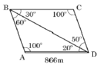
- 500m
- 550m
- 600m
- 650m
(정답률: 55%)
63. 수준측량의 주의사항에 대한 설명 중 옳지 않은 것은?
- 레벨은 가능한 두 점 사이의 중간에 거리가 같도록 세운다.
- 표척을 전후로 기울여 관측할 때에는 최소 읽음값을 취하여야 한다.
- 수준점 측량을 위한 관측은 왕복관측 한다.
- 수준점 간의 편도관측의 측점수는 홀수로 한다.
(정답률: 66%)
64. 그림에서 A점의 좌표가 (100, 100)일 때, B점의 좌표는? (단, 좌표의 단위는 m이다.)
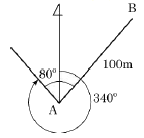
- (50, 13.4)
- (150, 186.6)
- (186.6, 150)
- (13.4, 50)
(정답률: 55%)
65. 수준측량의 오차를 오차의 원인(기계, 개인, 자연오차 등)에 따라 분류할 때, 자연오차에 속하지 않는 것은?
- 태양의 직사광선에 의한 오차
- 지구의 곡률에 의한 오차
- 시차에 의한 오차
- 대기굴절에 의한 오차
(정답률: 71%)
66. 오차의 방향과 크기를 산출하여 소거할 수 있는 오차는?
- 착오
- 정오차
- 우연오차
- 개인오차
(정답률: 69%)
67. 다음의 축척에 대한 도상거리 중 실거리가 가장 짧은 것은?
- 축척 1:500일 때의 도상거리 3cm
- 축척 1:200일 때의 도상거리 8cm
- 축척 1:1000일 때의 도상거리 2cm
- 축척 1:300일 때의 도상거리 4cm
(정답률: 68%)
68. 우리나라 동경 128° 30′, 북위 37° 지점의 평면 직각좌표는 어느 좌표 원점을 이용하는 가?
- 서부원점
- 중부원점
- 동부원점
- 동해원점
(정답률: 63%)
69. 어떤 각을 4명이 관측하여 다음과 같은 결과를 얻었다면 최확값은?
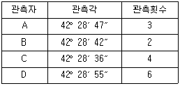
- 42° 28′ 47″
- 42° 28′ 44″
- 42° 28′ 41″
- 42° 28′ 36″
(정답률: 61%)
70. 축척 1:10000 지형도 상에서 균일 경사면 상에 40m와 50m 등고선 사이의 P점에서 40m와 50m 등고선까지의 최단거리가 각각 도상에서 5mm, 15mm일 때, P점의 표고는?
- 42.5m
- 43.5m
- 45.5m
- 47.5m
(정답률: 41%)
71. 전자기파거리측량기에 의한 거리관측오차 중 거리에 비례하는 오차가 아닌 것은?
- 굴절률 오차
- 광속도의 오차
- 반사경상수의 오차
- 광변조주파수의 오차
(정답률: 41%)
72. 50m 줄자로 250m를 관측할 경우 줄자에 의한 거리관측오차를 50m마다 ±1cm로 가정하면 전체길이의 거리측량에서 발생하는 오차는?
- ±2.2cm
- ±3.8cm
- ±4.8cm
- ±5.0cm
(정답률: 53%)
73. 기지삼각점 A와 B로부터 C와 D의 평면좌표를 구하기 위하여 그림과 같이 사변형망을 구성하고 8개의 내각을 측정하는 삼각측량을 실시하였다. 조정하여야 할 방정식만으로 짝지어진 것은?
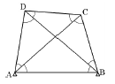
- 각방정식, 변방정식
- 변방정식, 측점방정식
- 각방정식, 변방정식, 측점방정식
- 각방정식, 변방정식, 측점방정식, 좌표방정식
(정답률: 52%)
74. 표고 300m인 평탄지에서의 거리 1500m를 평균해수면상의 값으로 고치기 위한 보정량은? (단, 지구의 반지름은 6370km라 한다.)
- -0.⑤8m
- -0.062m
- -0.066m
- -0.071m
(정답률: 44%)
75. 아래와 같이 정의되는 측량은?
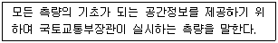
- 지적측량
- 공공측량
- 기본측량
- 수로측량
(정답률: 74%)
76. 직각좌표 기준 중 서부좌표계의 적용 범위로 옳은 것은?
- 동경 122°~124°
- 동경 124°~126°
- 동경 126°~128°
- 동경 128°~130°
(정답률: 55%)
77. 지도도식규칙을 적용하지 않아도 되는 경우는?
- 군사용의 지도와 그 간행물
- 기본측량 및 공공측량의 성과로서 지도를 간행하는 경우
- 기본측량의 성과를 이용하여 지도에 관한 간행물을 발간하는 경우
- 공공측량의 성과를 이용하여 지도에 관한 간행물을 발간하는 경우
(정답률: 68%)
78. 공공측량시행자는 공공측량을 하려면 미리 측량지역, 측량기간, 그밖에 필요한 사항을 누구에게 통지하여야 하는가?
- 시 ㆍ 도지사
- 지방국토관리청장
- 국토지리정보원장
- 시장 ㆍ 군수
(정답률: 62%)
79. 기본측량의 실시공고에 포함하여야 할 사항이 아닌 것은?
- 측량의 종류
- 측량의 목적
- 측량의 실시지역
- 측량의 성과 보관 장소
(정답률: 76%)
80. “성능검사를 부정하게 한 성능검사대행자”에 대한 벌칙 기준은?
- 1년 이하의 징역 또는 1천만원 이하의 벌금
- 2년 이하의 징역 또는 2천만원 이하의 벌금
- 3년 이하의 징역 또는 3천만원 이하의 벌금
- 5년 이하의 징역 또는 5천만원 이하의 벌금
(정답률: 67%)